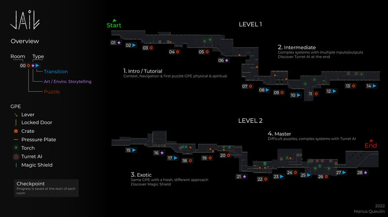
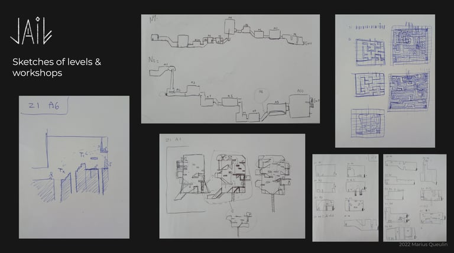
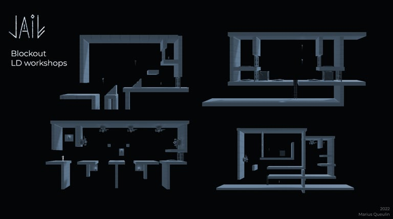
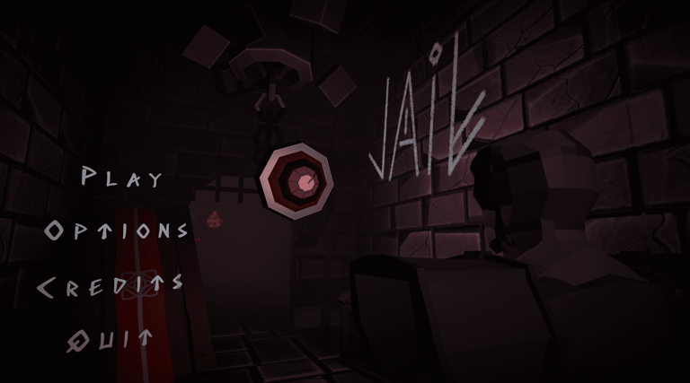
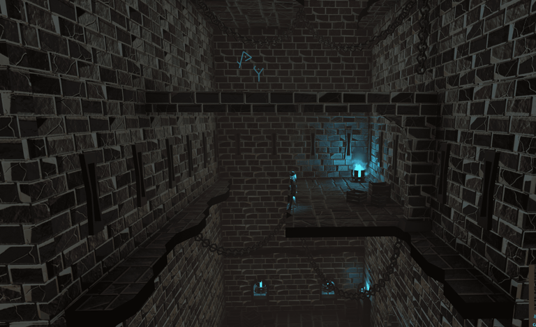
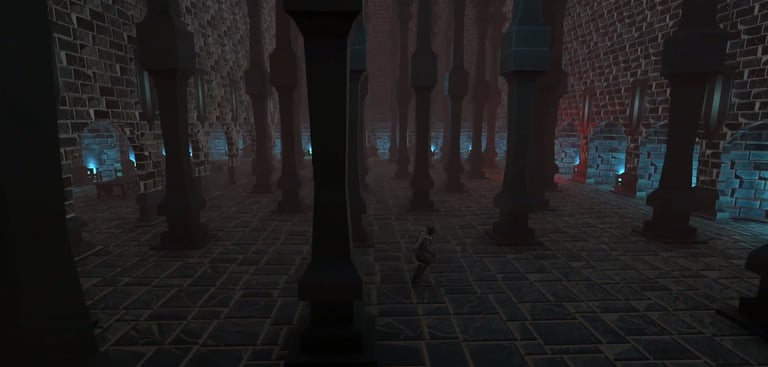
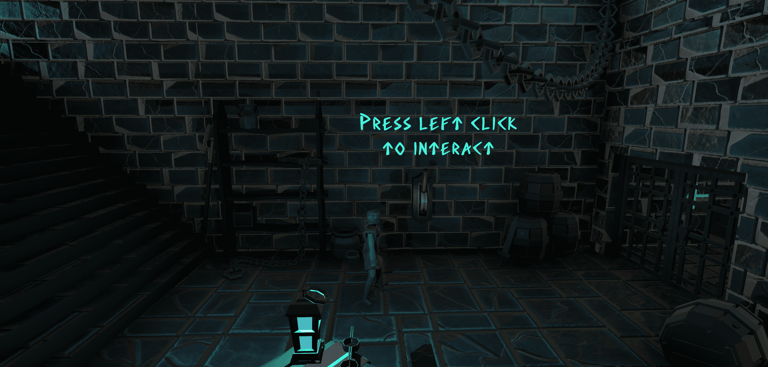

Marius Queulin
Perdu dans une prison oubliée, découvre des pouvoirs enfouis en toi. Trouve l'equilibre pour t'echapper.
Lost in a forgotten prison, discover powers buried within you. Find the balance to escape.
Le joueur incarne un chasseur de démon après avoir scellé en lui un démon. Le démon finit par briser le sceau : il faut absolument le poursuivre. En découle une série de puzzles, d'obstacles et d'ennemis à éviter en s'aidant du pouvoir spirituel du chasseur : celui de dissocier son esprit de son corps.
The player plays a demon hunter who has sealed a demon within himself. The demon eventually breaks the seal: you must pursue it. What follows is a series of puzzles, obstacles, and enemies to overcome using the hunter's spiritual power: the ability to dissociate his spirit from his body.



On est allé à l'essentiel pour assurer le court délai qu'on avait. En prenant des GPE classiques des codes du Puzzle en 2.5D, ce cadre simple nous a permis de dépasser nos espérances sur quelques points grâce à des prises d'initiatives.
We focused on the essentials to meet the tight deadline. By using classic GPE from 2.5D Puzzle conventions, this simple framework allowed us to exceed our expectations on several points through creative initiative.
On a testé et modifié la vitesse du personnage, ses animations, la gravité, etc. pour rendre le gameplay plus réactif, plus nerveux - rendant le tout beaucoup plus agréable et ancré dans notre volonté de semi-réaliste sans jurer pour autant avec les autres éléments.
We tested and adjusted the character's speed, animations, gravity, etc. to make the gameplay more responsive and snappy - making it much more enjoyable and grounded in our semi-realistic vision without conflicting with the other elements.




Durée du jeu : ~15 min
Game duration : ~15 min
Ce fut mon premier vrai projet de groupe. Évidemment, le projet n'est pas sans défauts, car notre expérience était minime et le délai pour le projet était court. Mais maintenant, je vois clairement les axes d'amélioration.
Ce que j'aurais fait différemment :
→ Metrics pour l'environnement mieux adaptés aux metrics du personnage (hauteur sous-plafond, plateformes…).
→ Architecture plus cohérente pour une prison (étages plus distinguables, autour de la zone de jeu…).
→ Soit tout recentrer sur l'esprit comme mécanique principale, soit axer le jeu sur la complémentarité Psychique et Physique en rendant les deux incontournables.
→ Des GPE plus originaux, s'inscrivant dans notre identité, mais en gardant des fonctions simples à comprendre pour le joueur.
This was my first real group project. Naturally, the project has its flaws, as our experience was minimal and the timeline was short. But now I can clearly see the areas for improvement.
What I would do differently:
→ Environment metrics better adapted to the character's metrics (ceiling height, platforms...).
→ More coherent architecture for a prison (more distinct floors, surrounding the play area...).
→ Either fully center the game on the spirit as the main mechanic, or focus on the complementarity of the Psychic and Physical by making both essential.
→ More original GPEs that reflect our identity, while keeping their functions simple enough for the player to understand.